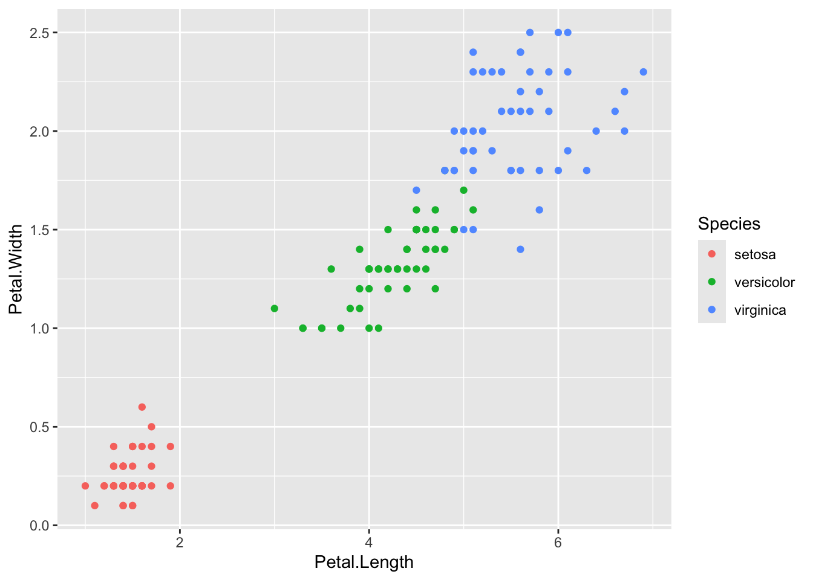

Creating Polished Documents
Today’s workshop was mostly a high level overview of using the
ggplot2 and kableExtra packages to produce
clean looking graphs and tables. These tables can then be rendered
within an R Markdown document and shared in various formats.
Professional Plots using ggplot2
The ggplot2 package is a graphing library based on the
grammar of graphics (gg) and part of the tidyverse
collection of packages. The grammar of graphics is a way to build up a
plot by mapping variable to a aesthetics such as points, lines,
colors, facets, scales, etc.
Here is one example of incrementally building a plot:
# Creates an empty plot
iris %>%
ggplot()
# Mapping variables to the x and y axes
iris %>%
ggplot(aes(x = Petal.Length, y = Petal.Width))# Adding a geometry layer (geom_)
iris %>%
ggplot(aes(x = Petal.Length, y = Petal.Width)) +
geom_point()
# Mapping the species variable to the point color
iris %>%
ggplot(aes(x = Petal.Length, y = Petal.Width, color = Species)) +
geom_point()
# Adding in extras to make a professional-looking graphic
iris %>%
ggplot(aes(x = Petal.Length, y = Petal.Width, color = Species)) +
geom_point(size = 3) +
scale_color_viridis_d() +
labs(title = "Iris Flower Species",
subtitle = "Petal width v. length",
x = "Length (cm)",
y = "Width (cm)") +
theme_bw()List of Resources
There is so much that can be done with ggplot2 and
supporting libraries. Here are some resources to get started and extend
to your graphing needs:
- R for data science chapter on visualization
- The R Graph Gallery
- ggfortify to “to visualize statistical result of popular R packages”
- GGally “extends ggplot2 by adding several functions to reduce the complexity of combining geoms with transformed data”
- ggforce “is a package aimed at providing missing functionality to ggplot2”
- patchwork “to make it ridiculously simple to combine separate ggplots into the same graphic”
- gganimate “to include the description of animation”
Pretty Looking Tables with kable
Printing a data frame to the screen can be ugly and uninspiring:
gapminder %>%
head(10)## # A tibble: 10 × 6
## country continent year lifeExp pop gdpPercap
## <fct> <fct> <int> <dbl> <int> <dbl>
## 1 Afghanistan Asia 1952 28.8 8425333 779.
## 2 Afghanistan Asia 1957 30.3 9240934 821.
## 3 Afghanistan Asia 1962 32.0 10267083 853.
## 4 Afghanistan Asia 1967 34.0 11537966 836.
## 5 Afghanistan Asia 1972 36.1 13079460 740.
## 6 Afghanistan Asia 1977 38.4 14880372 786.
## 7 Afghanistan Asia 1982 39.9 12881816 978.
## 8 Afghanistan Asia 1987 40.8 13867957 852.
## 9 Afghanistan Asia 1992 41.7 16317921 649.
## 10 Afghanistan Asia 1997 41.8 22227415 635.We can prepare this same data frame for publication by passing it
through the kable function (provided by knitr
and rexported by kableExtra) and the
kable_styling function (provided by
kableExtra):
gapminder %>%
head(10) %>%
kable(digits = 2) %>%
kable_styling(bootstrap_options = c("striped", "hover"))| country | continent | year | lifeExp | pop | gdpPercap |
|---|---|---|---|---|---|
| Afghanistan | Asia | 1952 | 28.80 | 8425333 | 779.45 |
| Afghanistan | Asia | 1957 | 30.33 | 9240934 | 820.85 |
| Afghanistan | Asia | 1962 | 32.00 | 10267083 | 853.10 |
| Afghanistan | Asia | 1967 | 34.02 | 11537966 | 836.20 |
| Afghanistan | Asia | 1972 | 36.09 | 13079460 | 739.98 |
| Afghanistan | Asia | 1977 | 38.44 | 14880372 | 786.11 |
| Afghanistan | Asia | 1982 | 39.85 | 12881816 | 978.01 |
| Afghanistan | Asia | 1987 | 40.82 | 13867957 | 852.40 |
| Afghanistan | Asia | 1992 | 41.67 | 16317921 | 649.34 |
| Afghanistan | Asia | 1997 | 41.76 | 22227415 | 635.34 |
Here’s an example that would be good for PDF output:
# NOT RUN
gapminder %>%
filter(year > 1990) %>%
rename(Continent = continent, Year = year) %>%
group_by(Continent, Year) %>%
summarise(`Average Life Expectancy` = mean(lifeExp)) %>%
kable(format = "latex", digits = 2) %>%
kable_styling(latex_options = c("striped", "hold_position")) %>%
collapse_rows(columns = c(1, 2))List of Resources
- R Markdown cookbook chapter on kable
- kableExtra vignette
All the Documents
Finally your pretty looking graphs and tables need a place to be proudly displayed. R Markdown is the solution! R Markdown is a document format the can mix R code and Markdown text formatting, as well as support for a few extra features such as directly embedding HTML, LaTeX, and Mathjax (for math typesetting).
The use cases for R Markdown are endless, and it would be impossible and an exercise in futility to try and go over all the possibilities. Instead we provide a list of the possible documents that can be created with R Markdown, and the resources for getting more help.
Document Formats
List of Resources
- knitr options
- An overview of all the knitr chunk options
- R Markdown: The
Definitive Guide
- A detailed reference on the built-in R Markdown output formats of the rmarkdown package, as well as several other extension packages
- R Markdown
Cookbook
- Provides more practical and relatively short examples to show the interesting and useful usage of R Markdown
- Authoring Books and
Technical Documents with R Markdown
- The general guide to working with bookdown
- R Markdown Reference Guide
- R Markdown from RStudio